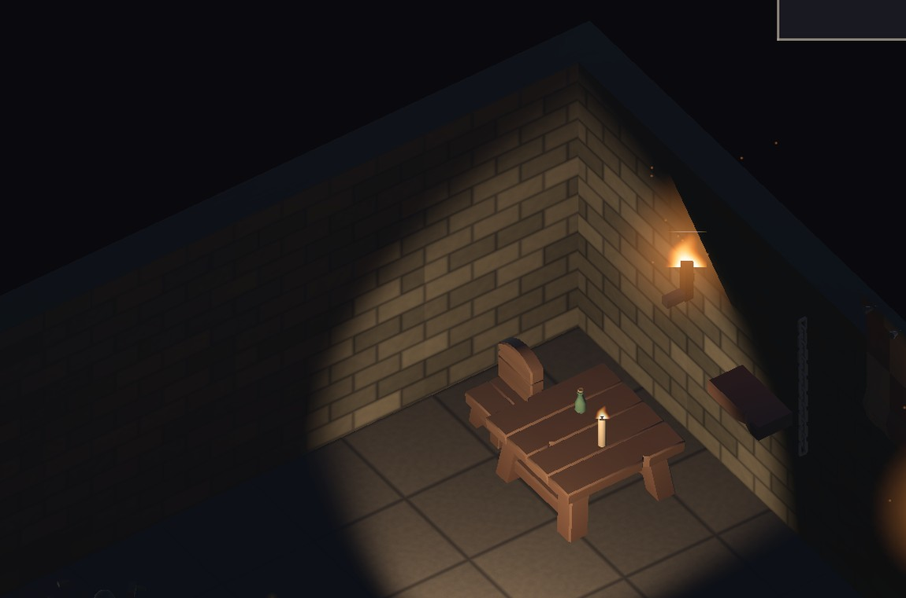
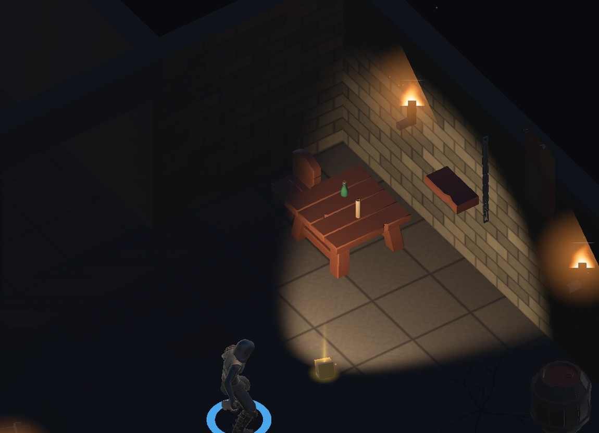
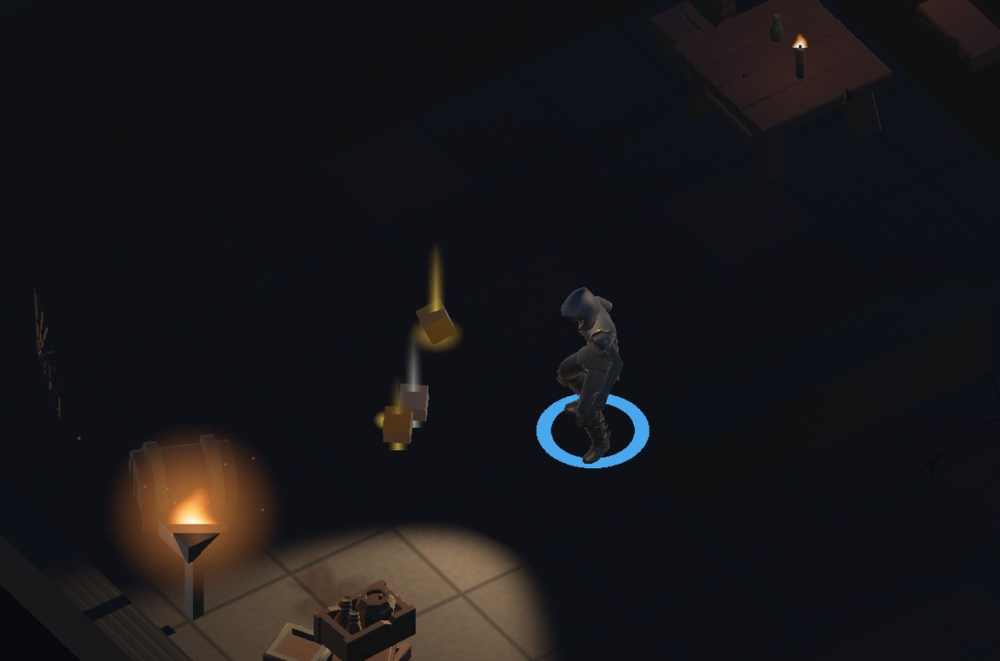

地城迴響 · 場景裝飾樣品（一間房）
混合方案：傢俱與容器用 KayKit（CC0），氛圍用程序化生成。 這是一間房 14 件的樣品，還沒鋪開到整個地城。

這不是看截圖推測的。房間建好時把每件擺設的名稱與世界座標寫成檔案，
再用 simctl get_app_container 從裝置撈回來——
光看截圖，看不見的東西分不出是「沒擺成功」還是「擺了但在暗處」。
| 類別 | 件數 | 內容 | 來源 |
|---|---|---|---|
| 牆面 | 5 | 旗幟、壁架｜蜘蛛網、鎖鏈、牆面裂痕 | KayKit 2｜程序化 3 |
| 地面貼花 | 2 | 裂縫地磚、血跡 | 程序化 2 |
| 立體擺設 | 7 | 桌、椅、酒瓶、蠟燭、酒桶、寶箱、板條箱 | KayKit 7 |
| 合計 | 14 | 成功 14、失敗 0 | KayKit 9｜程序化 5 |
| 項目 | 我先前的估計 | 實際 |
|---|---|---|
| 模型（9 個道具） | 約 3 MB | 296 KB |
| 貼圖（共用 atlas） | — | 14 KB |
因為樣品只取實際要用的 9 個道具，不是整包 90 個。授權是 CC0 1.0 Universal，已從官方倉庫的 LICENSE 原文確認。
第一版的 14 件全部拍不到，畫面一片黑。房間半深 4.2～6.2 公尺， 玩家生成點在南緣，到北牆有 7～11 公尺，而視野錐只有 8 公尺。 我把牆面裝飾集中在北牆，等於全部擺進黑暗裡。
這不只是樣品的擺放失誤，是鋪開時必須遵守的設計限制：房間環境光近乎為零， 看得見的只有視野錐掃到的地方，加上火把火盆周圍那幾圈。 擺在黑暗裡的裝飾玩家永遠看不到，等於沒做。四面牆都要分到，每面牆至少一件， 而且要貼著光源擺。

只用材質的 _Color 相乘壓暗解決不了——相乘只等比降亮度，
色相與飽和度原封不動，赤陶色壓暗之後只是變成「暗一點的赤陶色」。
真正要動的是 atlas 本身：往 Rec.709 感知亮度拉 55%，離線烘進 PNG。
第一版我寫成執行期用 GetPixels 處理，寫完就發現那需要貼圖開
Read/Write，而這專案沒有貼圖匯入設定、預設是關的——在裝置上會直接丟例外。
離線做同時避開這個坑，也不必每次啟動重算一次固定變換。
Blend DstColor Zero）。一般的半透明貼花是自發光的，
在視野錐外的黑暗裡照樣亮，那會直接讓視野錐失效。相乘天生沒這問題：
黑暗處底色是黑的，乘完還是黑的。不需要任何光照運算。已驗證有效。
配色仍未完全融合。降飽和 55% 之後好很多，但桌子的暖度還是比石材高一截。 要完全融合得再往上調，代價是道具會開始發灰、失去木頭的識別度。 這個取捨我沒有替你決定。
效能仍未實測。每層道具數會從 10～30 件增加到 28～42 件。 KayKit 共用單一材質這點在這裡是加分，但仍需實機量。